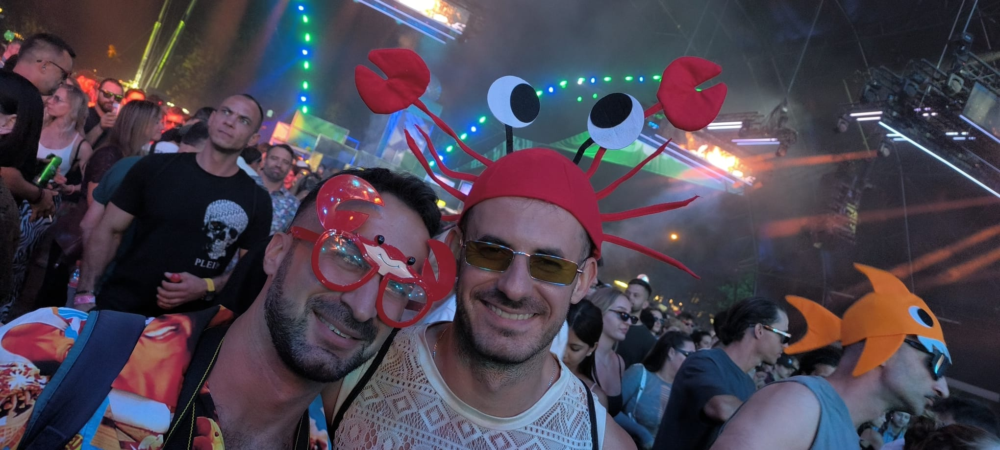

Direzione Lavori
Arriva in cantiere, guarda un muro per 40 minuti, dice «mmh», e se ne va. Il muro poi regge. Nessuno sa perché.
Attualmente: sveglio (circa)
Di giorno calcola travi in cemento armato. Di notte calcola quanti shottini stanno in un cappello a forma di granchio. Spoiler: tre. Ha una laurea, un casco giallo e nessuna memoria di sabato scorso.

DOC. AUTENTICO 📸 NON È IN FERIE, È IN CANTIERE 🏗️ 🦀 PROT. N. 148/BIS🗺️ Mappa del disastro
🚧 Chi è 'sto tizio
Michele si è laureato in Ingegneria Edile nel 2013 con una tesi dal titolo «Analisi sismica di edifici in muratura e perché il geometra Pasquale ha sempre torto». Da allora nessuno l'ha più visto usare una calcolatrice: dice che «il numero glielo dice la pancia» e finora — inspiegabilmente — la pancia ha sempre azzeccato.
Vive a Molfetta, in Via Bari 20, in uno studio che è metà ufficio tecnico e metà deposito di gadget da festival. Sulla scrivania convivono un livello laser, tre caschi gialli, un cappello a granchio e una piantina catastale usata come sottobicchiere dal 2019.
La sua giornata tipo: sveglia alle 6:30, cantiere alle 7:00, crisi esistenziale alle 7:04, caffè numero quattro alle 9:00, e alle 18:00 una techno da 148 BPM che — sostiene — è «la stessa frequenza di risonanza del solaio, quindi è lavoro».
«Il calcestruzzo si asciuga da solo, come i problemi.» — Ing. M. Leone, riunione di cantiere, 2024
Progetta ville, ristruttura bagni, perde regolarmente le chiavi dell'auto.
Rotonda consegnata con 4 anni di ritardo ma con 2 granchi decorativi in più.
Ha imparato tutto. Poi l'ha dimenticato. Poi l'ha reimparato. Poi basta.
Ruolo non retribuito ma profondamente sentito.
📐 Competenze certificate (da lui)
Arriva in cantiere, guarda un muro per 40 minuti, dice «mmh», e se ne va. Il muro poi regge. Nessuno sa perché.
Servizio esclusivo: viene alla tua inaugurazione vestito da crostaceo e certifica l'agibilità con voce solenne. Nessun valore legale. Grande valore umano.
Preventivo in 3 giorni, lavori in 3 anni, bonus fiscale in 3 vite. Ma il bagno alla fine è bellissimo.
🚜 Portfolio (documentato male)
Tecnicamente perfetta. Purtroppo progettata specchiata. Ora è un'attrazione turistica.
Il committente voleva «openspace». Michele ha preso l'appunto molto sul serio.
Non porta da nessuna parte, ma la pendenza è a norma. Certificata.
12 metri di cemento armato. Nessuna autorizzazione. Enorme consenso popolare.
🎮 Pausa cantiere
Raccogli i caschi prima che gli struzzi li nascondano nel deserto. Nessun animale viene stressato: corrono solo perché è divertente.
Premi “Avvia rincorsa” e usa frecce, WASD o i pulsanti.
«Gli ho chiesto di rifarmi il bagno. Mi ha rifatto il bagno. Ci ha messo due anni e mezzo e a metà lavori è sparito per andare a un festival, però il bagno è splendido e mi ha lasciato in regalo un cappello a forma di granchio. Voto: 9.»
📞 Contatti
Risponde entro 48 ore, salvo festival, sagre, ponti (sia festivi che in cemento armato) e giornate in cui non trova il telefono.
🏠 Studio Leone · Via Bari 20 — 70056 Molfetta (BA)